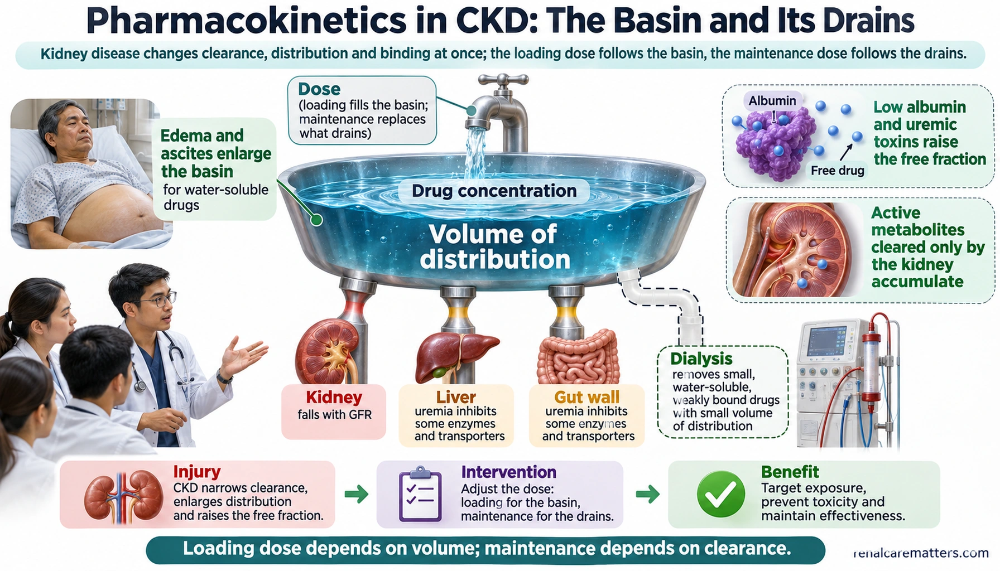
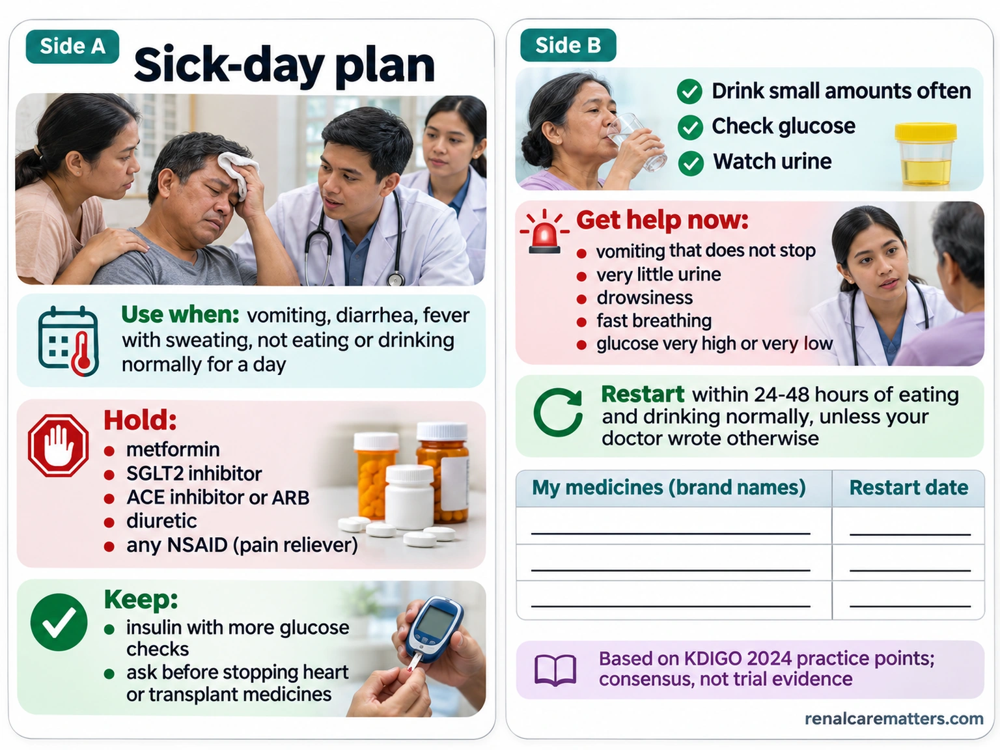

Reconcile medicines, adjust for kidney function with the right estimate, and stop nephrotoxins before they act.
PublishedNailathalaGipatikPepalwal:ReferencesMga SanggunianMga TinubdanReng Reperensya:11Audience: Adult and pediatric nephrology fellows · internal medicine and pediatric residents · medical interns on medicine, pediatrics, ICU and dialysis rotations, and residents who work shifts as dialysis physicians on dutyRead timeOras ng pagbasaOras sa pagbasaOras ning pamamasa:
Training track for nephrology fellows, residents and medical interns
Study material for medical interns, residents and fellows. It explains the reasoning behind common decisions; it is not a protocol and gives no drug doses. Doses, rates and order sets come from current guidelines, product labels, your institution’s approved protocols and your supervising physician. Benefit rules change: confirm them on the date of service. Every case is fictional.
Learning objectives
After this module you should be able to
Intern: Reconcile every medicine, supplement and herbal product a patient takes, and flag the nephrotoxins and the drugs that accumulate when kidney function falls.
Resident: Adjust drugs for kidney function using the right estimate (creatinine clearance (CrCl), indexed or nonindexed estimated glomerular filtration rate, or a combined creatinine and cystatin C estimate), and recognize when no estimate is valid because creatinine is not at steady state.
Fellow: Lead medication stewardship for patients on hemodialysis, continuous kidney replacement therapy (CKRT) and after transplant, including drug removal by dialysis, therapeutic drug monitoring and sick-day plans.
Pre-testBefore you read, answer the 5 self-assessment questions and note your score. After the module, select New set of questions and compare. The difference is what you learned; the questions you still miss are what to reread.
Start here
The big picture, in plain words
Your role · the medicine list as a kidney interventionAs an intern, you are the person most likely to find the plastic bag of tablets, the neighbor’s “rayuma” capsules and the decoction in a softdrink bottle. That discovery often explains the admission. As a resident, you choose the kidney estimate that fits the drug and the patient, and you stop or adjust what harms. As a fellow, you advise on drugs in dialysis, CKRT and transplant patients, where the kidney has been replaced by a machine or a graft and the old rules no longer apply.
In plain wordsThink of a drug in the body as water poured into a basin with a drain. The size of the basin is the volume of distribution; the width of the drain is the clearance. The water level is the drug concentration. Narrow the drain and the level rises with every pour.
The picture has a limit. The body has more than one drain: the kidney, the liver and the gut wall all clear drugs, and kidney disease narrows the liver and gut drains too, by inhibiting drug-metabolizing enzymes and transporters. The basin also changes shape: edema and ascites enlarge it for water-soluble drugs, while uremic toxins and low albumin free more drug from its binding proteins. Some drugs leave behind active metabolites that only the kidney can clear. And the drain can be widened again by dialysis, which removes some drugs efficiently and others hardly at all. Dosing in kidney disease is the art of estimating all of these at once.
Figure 1 · Key numbers
Drug dosing estimate (KDIGO 2024)Validated creatinine-based estimated glomerular filtration rate (eGFR) equations are appropriate for most people and settings (practice point)
Narrow therapeutic index (KDIGO 2024)Combined creatinine and cystatin C equations, or measured GFR, may be indicated (practice point)
Extremes of body size (KDIGO 2024)eGFR not indexed to body surface area may be indicated (practice point)
Nonsteroidal anti-inflammatory drug (NSAID) triple therapy (nested case-control, 487,372 users)Acute kidney injury (AKI) rate ratio 1.31; 1.82 in the first 30 days
Aminoglycosides (KDIGO 2012 AKI)Avoid unless no suitable, less nephrotoxic alternative (2A)
Metformin (FDA labeling)Contraindicated below an eGFR of 30 mL/min/1.73 m²
Most medication harm in kidney disease is predictable: a drug that accumulates, a nephrotoxin added to a dry patient, or a prescription copied forward for years while the eGFR fell. A few harms are hidden in products nobody wrote down. Your work is to find every substance, choose the right kidney estimate for each drug, stop what injures, and leave a plan for when to restart.
Opening case · fictional
Case: The farmer with the bag of rayuma pills
Saturday, 11 p.m., the emergency room of a provincial hospital in Cabanatuan City, Nueva Ecija. Mr. Ernesto Villanueva, 74, a retired rice farmer, has vomited for three days and barely eaten. He weighs 52 kg and is about 160 cm tall. He has type 2 diabetes and hypertension. His prescribed medicines are metformin, losartan and hydrochlorothiazide. For knee pain he has taken “rayuma” capsules from a neighbor twice a day for a month, plus mefenamic acid bought at the corner drugstore.
His blood pressure is 96/60 mm Hg lying down, pulse 108. His creatinine is 3.1 mg/dL; it was 1.3 mg/dL at a health center check three months ago. Potassium is 5.9 mmol/L, bicarbonate 14 mmol/L, lactate 4.2 mmol/L, glucose 212 mg/dL. Urine output since arrival is 80 mL in 3 hours.
You are the admitting resident. The intern hands you a plastic bag: blister packs, loose white tablets, the unlabeled capsules and a bottle of brown liquid. The emergency physician has ordered intravenous vancomycin and amikacin “for possible sepsis” and asks you for the doses.
Before reading on, decide:
Which of his medicines and products are contributing to this admission, and what will you stop?
Which kidney estimate will you use to dose his antibiotics tonight, and why are both equations misleading right now?
What plan will he and his family take home about restarting medicines and sick days?
Keep your answers in mind. The lesson gives you what you need, and the case review near the end shows one sound response.
Lesson · part 1
Pharmacokinetics in kidney disease: the basin, the drains and the binding
Four quantities decide a drug’s concentration over time: absorption, volume of distribution, protein binding and clearance. Kidney disease changes all four. The Kidney Disease: Improving Global Outcomes (KDIGO) conference on drug dosing noted that although glomerular filtration rate (GFR) is the metric used to adjust doses, kidney disease also affects nonrenal clearance, a point most pharmacokinetic studies have not captured, and that patients on kidney replacement therapy and children are poorly studied.1
Quantity
What kidney disease does
What you see or do
Clearance (renal)
Falls with GFR for drugs excreted unchanged in urine
Accumulation: reduce the dose, lengthen the interval, or choose another drug
Clearance (nonrenal)
Uremia inhibits some liver and gut enzymes and transporters
Some “liver” drugs still accumulate
Active metabolites
Renally cleared metabolites build up
Toxicity from a parent drug at a “normal” dose (for example, sedation from opioid metabolites)
Volume of distribution
Edema, ascites and overload enlarge it for water-soluble drugs
The loading dose is not reduced for kidney function, and may need to be larger
Protein binding
Low albumin and uremic toxins raise the free fraction
A “normal” total level can hide a high free level (phenytoin is the classic example)
Loading versus maintenance. The loading dose fills the basin, so it depends on the volume of distribution, not on the drain. In a septic patient with acute kidney injury (AKI), cutting the first dose of an antibiotic because the creatinine is high leaves the infection untreated during the hours that matter most. The maintenance dose replaces what the drains remove, so that is where kidney function enters. Ask the pharmacist and the attending for both numbers separately.
Half-life and time to steady state. When clearance falls, half-life lengthens, and so does the time to reach a steady concentration. A drug whose level would have stabilized in a day may take several days in kidney failure, and a toxic level may appear on day 4 of a regimen that looked fine on day 1.
RememberSeparate the loading dose from the maintenance dose. Kidney function changes the second, rarely the first.

Figure 2. The basin and its drains. Kidney disease changes clearance, distribution and binding at once; the loading dose follows the basin, the maintenance dose follows the drains.
Lesson · part 2
Adjusting for kidney function: which number, and when none is valid
Drug labels written before 2010 usually based their kidney bands on creatinine clearance estimated by the Cockcroft–Gault equation, derived in 1976 from 249 patients and compared against measured clearance in 236, with a correlation of 0.83. It uses age, weight and serum creatinine, with 15% less for women.2 Modern laboratories report eGFR from the Chronic Kidney Disease Epidemiology Collaboration (CKD-EPI) 2021 equation, indexed to a body surface area of 1.73 m².3 The two numbers often disagree, most of all in small, older patients.
KDIGO 2024 gives three practice points (ungraded): validated creatinine-based eGFR equations are appropriate for drug dosing in most people and settings; for drugs with a narrow therapeutic range, or when the creatinine estimate is unreliable, equations that combine creatinine and cystatin C, or a measured GFR, may be indicated; and at extremes of body weight, eGFR not indexed for body surface area may be indicated.4 Nonindexed eGFR in mL/min is the indexed value multiplied by the patient’s body surface area and divided by 1.73.
Arithmetic illustration, not a dose. Mr. Villanueva’s baseline creatinine of 1.3 mg/dL at age 74 gives a CKD-EPI 2021 eGFR of about 58 mL/min/1.73 m². His body surface area is about 1.5 m², so his nonindexed eGFR is about 50 mL/min. Cockcroft–Gault gives about 37 mL/min for the same creatinine. Tonight’s creatinine of 3.1 mg/dL would give a Cockcroft–Gault value near 15 mL/min, but that number is not valid, because creatinine has not reached steady state.
Situation
Better estimate
Why
Stable chronic kidney disease (CKD), most drugs
Creatinine-based eGFR
KDIGO 2024 practice point
Label states creatinine clearance bands
Cockcroft–Gault, or nonindexed eGFR as the label and pharmacist advise
The label was tested in those units
Very small or very large body size
Nonindexed eGFR (mL/min)
Drug clearance depends on the patient’s actual GFR, not one scaled to 1.73 m²
No equation is valid; use the clinical picture, urine output, kinetic estimates and drug levels
Equations assume steady state
When creatinine is moving. All the equations assume that creatinine production equals excretion. When filtration falls suddenly, creatinine takes days to rise to its new level, so any equation applied to a rising creatinine overestimates GFR. In the first day of severe AKI the true GFR may be close to zero while the equation still says 25. Kinetic eGFR (Module 2) helps; urine output and drug levels help more. As the kidney recovers, the opposite happens and doses that were right on day 3 become too low by day 7.
Philippine practice. The site’s Drug Index (Dosis) shows the kidney dosing bands from United States labels in the measure the label uses, so a band written in creatinine clearance stays in creatinine clearance. Cystatin C is unavailable or costly in many provinces; when you cannot measure it, write which estimate you used and why.
RememberName the estimate next to every kidney-adjusted dose: eGFR, nonindexed eGFR or creatinine clearance. In AKI, write that no estimate is at steady state.
NSAIDs and the triple whammy. When blood volume or pressure falls, the kidney holds GFR up by two levers: prostaglandins dilate the afferent arteriole, and angiotensin II constricts the efferent arteriole. A nonsteroidal anti-inflammatory drug (NSAID) removes the first lever; an angiotensin-converting enzyme (ACE) inhibitor or angiotensin receptor blocker (ARB), together called renin-angiotensin system inhibitors (RASi), removes the second; a diuretic lowers the volume that both were defending. In a cohort of 487,372 users of antihypertensive drugs in the United Kingdom, double combinations with an NSAID were not associated with more AKI, but the triple combination was (rate ratio 1.31), most of all in the first 30 days (1.82).5 The study was observational and cannot prove cause, but the physiology and the timing point the same way. In the Philippines, mefenamic acid, ibuprofen and combination pain relievers are commonly bought without a prescription; ask by brand name.
Agent
Mechanism of injury
What you do
NSAIDs
Afferent vasoconstriction; interstitial nephritis
Stop in AKI and advanced CKD; avoid with RASi plus diuretic
Aminoglycosides
Proximal tubular uptake and necrosis
Use only without a suitable alternative; once-daily dosing; levels
Vancomycin
Tubular injury, worse with high exposure and with other nephrotoxins
AUC-guided monitoring
Iodinated contrast
Vasoconstriction and tubular toxicity; risk lower than once believed
Do not withhold needed imaging; prophylaxis per risk
Herbal and slimming products
Interstitial fibrosis, tubular injury, hidden drugs or heavy metals
Identify, stop, report
Aminoglycosides. KDIGO 2012 suggests not using aminoglycosides for infections unless no suitable, less nephrotoxic alternative is available (2A), and, in patients with normal kidney function in steady state, giving them as a single daily dose rather than multiple daily doses (2B).6 When they are needed in AKI, for a resistant gram-negative infection for example, the plan needs the attending, the pharmacist and drug levels.
Vancomycin. The 2020 revised consensus guideline from four United States pharmacy and infectious diseases societies recommends area-under-the-curve (AUC)-guided dosing and monitoring for serious methicillin-resistant Staphylococcus aureus (MRSA) infections, with a target AUC of 400 to 600 mg·h/L (assuming a minimum inhibitory concentration of 1 mg/L), in place of trough-only monitoring, to keep efficacy while lowering kidney injury.7 Where AUC software or rapid levels are unavailable, the unit protocol and the pharmacist decide how levels are used.
Iodinated contrast. The American College of Radiology and National Kidney Foundation consensus concluded that the risk of AKI after intravenous contrast has been overstated, because older studies lacked control groups to separate AKI caused by contrast from AKI that merely followed it. Prophylaxis with intravenous normal saline is indicated for patients with AKI or an eGFR below 30 who are not on maintenance dialysis, and may be considered at 30 to 44 in individual high-risk cases.8 A needed computed tomography (CT) scan should not be withheld from a patient with sepsis or a stroke because of the creatinine.
Herbal products. In 1993, nephrologists in Brussels described nine young women with rapidly progressive interstitial fibrosis after the same slimming regimen containing Chinese herbs; all had severe kidney failure, and several started dialysis.9 That case series is now regarded as the start of what became known as aristolochic acid nephropathy. Many Philippine “kidney cleanse,” “rayuma” and slimming products have no label you can trust, and some contain undeclared steroids or NSAIDs. Ask, keep the product, report it, and treat it as a suspect until proven otherwise.
RememberIn every patient with AKI, list the NSAID, the RASi, the diuretic, the antibiotic, the contrast and the herbal product, and decide about each one by name.
Lesson · part 4
Dosing on dialysis, CKRT and after transplant
Once the native kidney fails, the drain is a dialyzer, a peritoneal membrane or a graft. Whether a drug is removed depends on the drug (molecular size, protein binding, volume of distribution) and on the treatment (membrane flux, blood and dialysate flow, session length, and whether it is intermittent or continuous).1 Small, water-soluble, weakly bound drugs with a small volume of distribution are removed well; large, highly bound or widely distributed drugs are not.
Treatment
Drug removal pattern
Practical point
Intermittent hemodialysis
Large removal during the session, little between
Give dialyzable drugs after the session on dialysis days, as the label and pharmacist advise
CKRT
Continuous removal; total clearance often higher than the old “anuric” doses assume
Underdosing antibiotics is a real risk; dose to the effluent rate the attending sets
Intraperitoneal antibiotics follow International Society for Peritoneal Dialysis (ISPD) guidance
Kidney transplant
Graft function varies; calcineurin inhibitors interact widely
Check every new drug for cytochrome P450 3A4 (CYP3A4) interactions and nephrotoxicity
Residual function counts. A patient on hemodialysis who still passes a liter of urine a day clears some drugs between sessions. Protect that function by avoiding nephrotoxins; it is worth more than any drug you could add.
Transplant stewardship. Tacrolimus and cyclosporine are metabolized by the cytochrome P450 3A4 system. Azole antifungals, some macrolides and some calcium channel blockers raise their levels; rifampicin and several antiepileptic drugs lower them. Each change can cause toxicity or rejection. A fellow checks every new prescription for a transplant recipient against the immunosuppressant, and asks for a level when an interacting drug starts or stops.
In childrenDoses are written per kilogram or per square meter of body surface area, and kidney function and drug-metabolizing enzymes mature through infancy and childhood, so the same drug behaves differently at different ages.10 Pediatric labeling, a pediatric pharmacist and the pediatric nephrologist set the dose. See Attending Pediatric Nephrologist, Module 28.
RememberOn dialysis or CKRT, ask two questions for every drug: is it removed by this treatment, and when is the next session or the current effluent rate? Then dose with the pharmacist.
Lesson · part 5
Sick-day plans and restarting medicines
During vomiting, diarrhea, fever or poor intake, some medicines that protect the kidney in health can harm it when the patient is dry: RASi and diuretics deepen the fall in GFR, sodium-glucose cotransporter 2 (SGLT2) inhibitors add volume loss and the risk of ketoacidosis, metformin can accumulate and contribute to lactic acidosis if the kidney fails, and NSAIDs remove the last defense. Sulfonylureas and insulin can cause hypoglycemia when the patient is not eating and clearance falls.
KDIGO 2024 suggests considering planned discontinuation of medicines such as metformin, ACE inhibitors, ARBs and SGLT2 inhibitors in certain circumstances, such as before elective surgery or while managing adverse effects, and advises communicating a clear plan for when to restart them (practice points).4 The United States Food and Drug Administration (FDA) labeling for metformin also asks for it to be stopped before iodinated contrast in patients with an eGFR of 30 to 60 and restarted when kidney function is stable, and it is contraindicated below 30.11 Sick-day rules rest on physiology and consensus rather than trials, and they carry their own risk: a protective drug stopped during an illness and never restarted. The restart plan matters as much as the stop.
Figure 3 · Sick-day plan the patient carries
When to use itVomiting, diarrhea, fever with sweating, or not eating or drinking normally for a day.
Hold theseMetformin, SGLT2 inhibitor, ACE inhibitor or ARB, diuretic, and any NSAID, unless your doctor wrote otherwise.
Keep theseInsulin with more frequent glucose checks, and other medicines as written; ask before stopping heart or transplant medicines.
Drink and checkSmall, frequent drinks; glucose checks if diabetic; note urine output.
Seek helpVomiting that does not stop, very little urine, drowsiness, fast breathing, or glucose very high or low.
RestartWithin 24 to 48 hours of eating and drinking normally, unless told otherwise.
A common memory aid in the United Kingdom lists the classes as sulfonylureas, ACE inhibitors, diuretics, metformin, ARBs, NSAIDs and SGLT2 inhibitors. Use whatever list your unit uses, translate it into the patient’s language, and write it on a card with the patient’s own brand names.
Stop and callStop and call the attending nephrologist (per unit protocol, but always ask the attending nephrologist for guidance) when you find:
AKI with potassium of 6.0 mmol/L or higher, severe acidosis or very low urine output
Suspected metformin-associated lactic acidosis: high lactate with acidosis in a patient taking metformin and failing kidneys
A request to give an aminoglycoside or a second nephrotoxin to a patient with AKI
A toxic drug level, or a narrow-therapeutic-index drug in a patient whose kidney function is changing fast
A possible poisoning or overdose that dialysis might remove
RememberEvery stop needs a restart date. Write when each held medicine comes back, and who will check.

Figure 4. Stop, then restart. A sick-day card is only safe if it also says when each medicine comes back.
On the floor
Real situations: problems and solutions
These are fictional but typical. For each one, cover the answer, decide what you would do, then compare. Where a step depends on local rules, your unit’s procedure and your supervisor’s direction come first.
The vancomycin trough that climbed
What you see
A 63-year-old woman in a Davao ward on vancomycin and piperacillin-tazobactam for a diabetic foot infection has a creatinine rising from 1.0 to 1.9 mg/dL by day 4.
What is likely going on
Drug-associated AKI with rising vancomycin exposure; the combination and the long course add risk.
What to do
Review the indication and alternatives with the infectious diseases team, use AUC-guided monitoring per protocol, stop other nephrotoxins, and reassess volume.
Why it matters
Rising exposure and falling clearance feed each other; early review limits both.
The dialysis patient who got the wrong dose
What you see
A 55-year-old man on hemodialysis Monday, Wednesday and Friday at a Pasig unit received a dialyzable antibiotic just before his Wednesday session.
What is likely going on
Much of the dose was probably removed during the session.
What to do
Discuss with the pharmacist and the attending whether a supplemental dose is needed, and schedule future doses after sessions as advised.
Why it matters
Timing around dialysis decides whether a drug works at all.
The transplant recipient with a fungal infection
What you see
A 41-year-old kidney transplant recipient in Quezon City on tacrolimus is started on an azole antifungal by another service.
What is likely going on
The azole inhibits CYP3A4 and will raise tacrolimus levels.
What to do
Alert the transplant team, plan a tacrolimus level and dose review, and watch creatinine and neurologic symptoms.
Why it matters
An unchecked interaction can cause calcineurin inhibitor toxicity, or rejection when the azole is stopped.
The herbal decoction for the kidneys
What you see
A 50-year-old market vendor in Tacloban with CKD G3a drinks a daily herbal decoction sold as a “kidney cleanser.” Her eGFR has fallen faster this year.
What is likely going on
A possible nephrotoxic or adulterated herbal product.
What to do
Ask her to stop it, keep the product, note the brand and seller, report it, and recheck kidney function and urine.
Why it matters
Herbal nephropathy can progress after the product is stopped; early identification matters.
Field notes
Ask every patient to bring every bottle, sachet and capsule, and photograph the labels into the chart.
Write the kidney estimate you used beside every adjusted dose.
In AKI, give full loading doses of needed antibiotics and adjust maintenance daily.
Check every new prescription for a transplant recipient against tacrolimus or cyclosporine.
Give a sick-day card with restart dates in the patient’s language at every discharge on metformin, RASi, SGLT2 inhibitors or diuretics.
Case review
Back to the case: The farmer with the bag of rayuma pills
What contributed, and what to stop. Three days of vomiting made him volume depleted. Losartan and hydrochlorothiazide with mefenamic acid form the triple combination associated with AKI, worst in the first weeks; the unlabeled “rayuma” capsules may contain an NSAID or a steroid. Metformin, with a creatinine of 3.1 mg/dL and a lactate of 4.2 mmol/L, must be stopped and lactic acidosis considered. Hold losartan, hydrochlorothiazide, metformin, mefenamic acid and the capsules; keep the products for identification. Treat the volume depletion and the potassium per the attending.
Which estimate tonight. None is valid: creatinine is rising, so every equation overestimates his GFR, and the Cockcroft–Gault value near 15 mL/min is no better. If sepsis is likely, give full loading doses, because the loading dose depends on volume of distribution, not on the kidney; then set maintenance doses and intervals with the pharmacist, guided by urine output and drug levels. Ask whether amikacin is truly needed: KDIGO suggests avoiding aminoglycosides when a less nephrotoxic option exists (2A). For vancomycin, use AUC-guided monitoring as the unit protocol allows. Reassess daily as the kidney recovers.
The plan home. Before discharge, his baseline creatinine estimates (eGFR about 58, nonindexed about 50, Cockcroft–Gault about 37) decide which doses his labels allow. Give him and his daughter a sick-day card in Tagalog with his brand names: hold metformin, losartan, the diuretic and any pain reliever when vomiting or not eating, and restart within 24 to 48 hours of eating normally, or as the doctor writes. Write the restart date for losartan and metformin, list paracetamol as the safer pain reliever at the dose the attending sets, tell him not to take the neighbor’s capsules, and arrange a creatinine and potassium check within a week.
Interactive case · fictional
Interactive case: The medicine bag and the septic kidney
Work through a shift one decision at a time. The panel at the top changes with what you choose. After each choice you see why it is, or is not, the best move; after a weaker one you can try again or carry on and see where it leads. Your first choice at each step is scored. The score stays on this device and nothing is sent anywhere. In real practice, your unit’s protocol and the people responsible for each decision come first.
Skills lab · with your preceptor
Skills checklist: Renal pharmacology and medication stewardship
Complete with a preceptor, on the ward or in clinic. Sign-off is local. Your preceptor rates each step as satisfactory, needs practice, or not observed. Steps marked Critical must all be satisfactory before sign-off. This checklist supports supervised learning; your unit’s own procedure and competency form are the authority. A printable version of every checklist is on the trainer page.
Completes a medicine reconciliation that includes over-the-counter, herbal and supplement products by brand name
Chooses between eGFR, nonindexed eGFR and creatinine clearance for a named drug and states why
Explains why no equation is valid when creatinine is not at steady state and plans dosing by other means
Identifies the NSAID, RASi and diuretic combination and stops or replaces the NSAID
Plans antibiotic dosing for a patient on hemodialysis or CKRT with the pharmacist, including timing around sessions
Writes a sick-day card with hold and restart instructions in the patient’s language
Placement activity. Ward, emergency room, dialysis unit or clinic
Self-assessment
Check your understanding
Each visit draws 5 questions at random from this module’s 5-question bank. Choose the single best answer for each, then select Check answers; an explanation appears under the best answer. Select New set of questions for a different mix. A good target is 4 of 5 on two different sets. Nothing you select is sent anywhere; scoring happens in your browser.
Matzke, G. R., Aronoff, G. R., Atkinson, A. J., Jr., Bennett, W. M., Decker, B. S., Eckardt, K. U., Golper, T., Grabe, D. W., Kasiske, B., Keller, F., Kielstein, J. T., Mehta, R., Mueller, B. A., Pasko, D. A., Schaefer, F., Sica, D. A., Inker, L. A., Umans, J. G., & Murray, P. (2011). Drug dosing consideration in patients with acute and chronic kidney disease—a clinical update from Kidney Disease: Improving Global Outcomes (KDIGO). Kidney International, 80(11), 1122–1137. https://doi.org/10.1038/ki.2011.322
Cockcroft, D. W., & Gault, M. H. (1976). Prediction of creatinine clearance from serum creatinine. Nephron, 16(1), 31–41. https://doi.org/10.1159/000180580
Inker, L. A., Eneanya, N. D., Coresh, J., Tighiouart, H., Wang, D., Sang, Y., Crews, D. C., Doria, A., Estrella, M. M., Froissart, M., Grams, M. E., Greene, T., Grubb, A., Gudnason, V., Gutiérrez, O. M., Kalil, R., Karger, A. B., Mauer, M., Navis, G., ... Chronic Kidney Disease Epidemiology Collaboration. (2021). New creatinine- and cystatin C–based equations to estimate GFR without race. The New England Journal of Medicine, 385(19), 1737–1749. https://doi.org/10.1056/NEJMoa2102953
Kidney Disease: Improving Global Outcomes (KDIGO) CKD Work Group. (2024). KDIGO 2024 clinical practice guideline for the evaluation and management of chronic kidney disease. Kidney International, 105(4S), S117–S314. https://doi.org/10.1016/j.kint.2023.10.018
Lapi, F., Azoulay, L., Yin, H., Nessim, S. J., & Suissa, S. (2013). Concurrent use of diuretics, angiotensin converting enzyme inhibitors, and angiotensin receptor blockers with non-steroidal anti-inflammatory drugs and risk of acute kidney injury: Nested case-control study. BMJ, 346, e8525. https://doi.org/10.1136/bmj.e8525
Kidney Disease: Improving Global Outcomes (KDIGO) Acute Kidney Injury Work Group. (2012). KDIGO clinical practice guideline for acute kidney injury. Kidney International Supplements, 2(1), 1–138. https://doi.org/10.1038/kisup.2012.1
Rybak, M. J., Le, J., Lodise, T. P., Levine, D. P., Bradley, J. S., Liu, C., Mueller, B. A., Pai, M. P., Wong-Beringer, A., Rotschafer, J. C., Rodvold, K. A., Maples, H. D., & Lomaestro, B. M. (2020). Therapeutic monitoring of vancomycin for serious methicillin-resistant Staphylococcus aureus infections: A revised consensus guideline and review by the American Society of Health-System Pharmacists, the Infectious Diseases Society of America, the Pediatric Infectious Diseases Society, and the Society of Infectious Diseases Pharmacists. American Journal of Health-System Pharmacy, 77(11), 835–864. https://doi.org/10.1093/ajhp/zxaa036
Davenport, M. S., Perazella, M. A., Yee, J., Dillman, J. R., Fine, D., McDonald, R. J., Rodby, R. A., Wang, C. L., & Weinreb, J. C. (2020). Use of intravenous iodinated contrast media in patients with kidney disease: Consensus statements from the American College of Radiology and the National Kidney Foundation. Radiology, 294(3), 660–668. https://doi.org/10.1148/radiol.2019192094
Vanherweghem, J. L., Depierreux, M., Tielemans, C., Abramowicz, D., Dratwa, M., Jadoul, M., Richard, C., Vandervelde, D., Verbeelen, D., & Vanhaelen-Fastre, R. (1993). Rapidly progressive interstitial renal fibrosis in young women: Association with slimming regimen including Chinese herbs. The Lancet, 341(8842), 387–391. https://doi.org/10.1016/0140-6736(93)92984-2
Kearns, G. L., Abdel-Rahman, S. M., Alander, S. W., Blowey, D. L., Leeder, J. S., & Kauffman, R. E. (2003). Developmental pharmacology—drug disposition, action, and therapy in infants and children. The New England Journal of Medicine, 349(12), 1157–1167. https://doi.org/10.1056/NEJMra035092
Educational self-study for physicians in training. Clinical tasks need your institution’s authorization and supervision. Completing this track is an Academy learning record only. It does not confer licensure, specialist status, PSN or PNSP membership or board eligibility, procedural privileges, CPD units, or completion of an institutional training program, and it does not replace current guidelines, regulations, your institution’s protocols and formulary, or your supervisor.